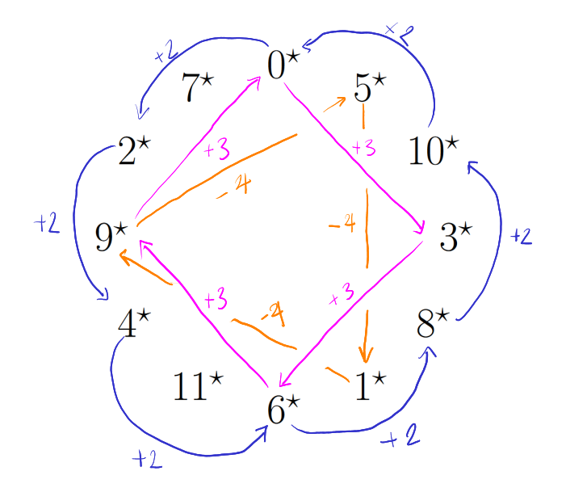
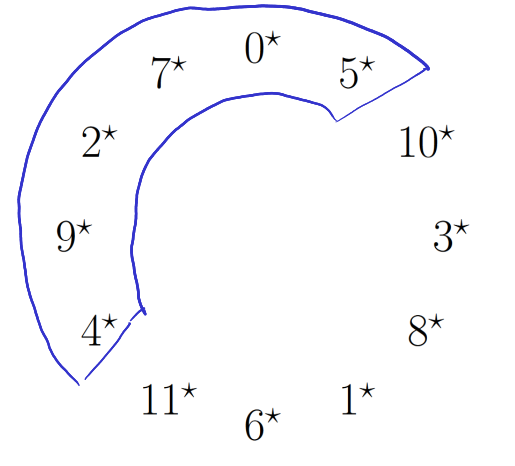
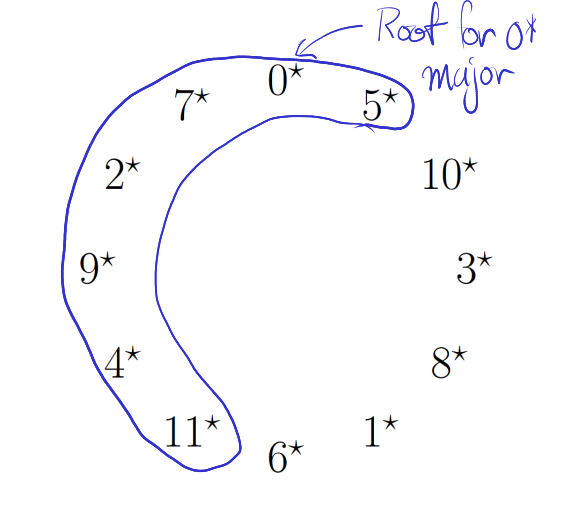
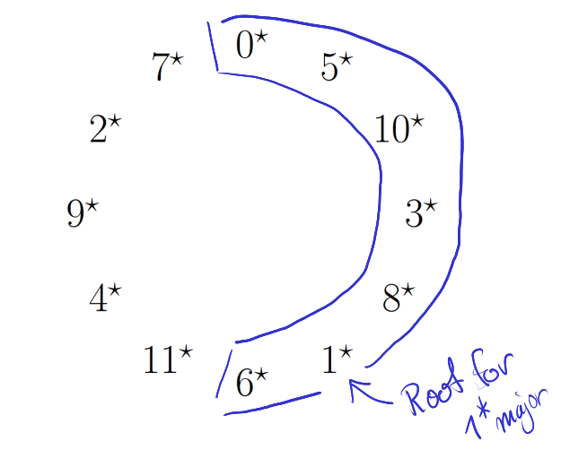
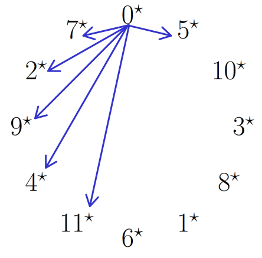

The Circle of Fourths

The circle of fourths represents many important ideas in one place. The first and most important idea is the importance of the fourth or fifth, that is moving by 5 or moving by 7 steps. Firstly this is important because these intervals are the most stable when played against the root, when chords are played with their roots moving by 5 or 7 steps it sounds nice, also that when added repeatedly they are able to generate all the numbers from 0 to 11 in our system, it also has other interesting connections that we'll see here.
During our discussion we may refer to the circle of fourths without the geometric circle like this:
... 0 5 10 3 8 1 6 11 4 9 2 7 0 5 10 3 8 ...
Finding Patterns
The only thing you should remember about the circle of fourths is that it's built by adding 5 repeatedly, from there we can derive many different patterns:
As you can see I've noted just a few of the different patterns in the circle, the main thing to note being that if you jump over the same number of notes then the difference stays the same, for example by jumping by 3 (clockwise) each time we add 3 to the current note.
None of this is magic, if we wanted to know why rotating 4 clockwise makes us subtract 4 from the note we were just at, we just go back and recall that between any two notes there is a difference of 5, thus if we move clockwise four times we've added 20 to our previous number, which is equivalent to -4 since 20 = 2 * 12 - 4.
Since these interval jumps hold no matter where they are started on the circle, we'll say that they're rotationally invariant (they don't change when you rotate them to different locations).
Connection to the Instrument
Since our instrument is tuned in a way such that there are gaps of 5 steps between each string, we can see that their is a section of the circle which represents the open strings of our instrument: 0 5
This makes our discussion about -4 make more sense too, if you remember back to when we learned about horizontal movement on the fretboard you might remember that moving by 4 across the fretboard (towards the floor) makes us subtract 4 from our previous anchor interval, thus we can understand the circle using our fretboard knowledge and vise versa.
And the notes of the open strings of the instrument are 4* 9* 2* 7* 0* 5* (almost a 0* major scale).
This means that the circle of fourths represents a natural extension of the instrument, so if we were to add more horizontal layers (strings) to our instrument we would continue using notes from the circle.
Connection to Scales
When we looked at the connection to the instrument we saw that the circle almost contained the 0* major scale, we can extend that pattern so that it does, like this:
... 0 5 10 3 8 1 6 11 4 9 2 7 0 5 10 3 8 ...
Additionally since we know that major and minor scales are connected, we can see that this also represents the 9* minor scale.
It also works for any major scale:
To understand why it works for any scale we can see that the structure of the 0* major is encoded like this
Where 0* has been used to show what each skip around the circle does to modify 0*, so by choosing exactly the notes in this fashion around any other note, we know it will form a major scale since patterns found on the circle are rotationally invariant.